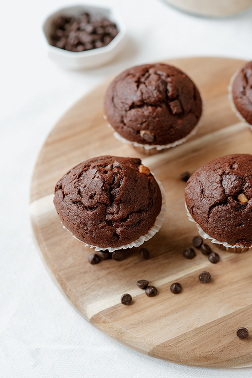
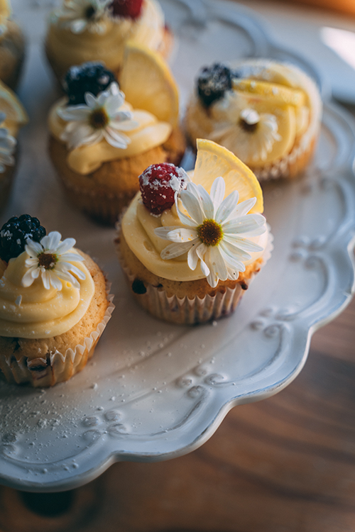

About Us
This site is one dedicated to the art of baking, housing recipes with simple instructions. The questions that may need answering are "Are these recipes vegan?", "Are they gluten-free?" and "Are there alternative ingredients?" These questions will be answered at the beginning of each recipe, as the answer may not be consistent. No prior information is required to use this site, however some tools will be necessary. Expect measuring cups and pans for almost every recipe!
 The goal of this site is to be easy to use and easy to follow. Unlike others, this site strives to get the food you want from your ingredients to your plate in as little time as possible! Here we try to be as realistic as possible with which recipes will be displayed for use. Every time I wanted to bake something the first thing necessary was a recipe, which sometimes proved difficult to follow or unreliably written. When I needed to make a website the first reliable idea was a site to house recipes for baking, it turned out my own cookbooks just weren’t enough for my cooking needs!